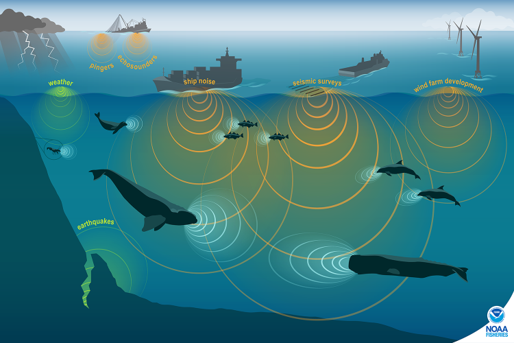
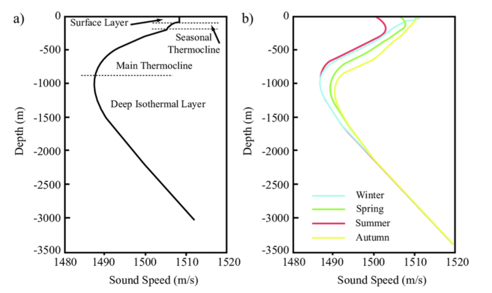
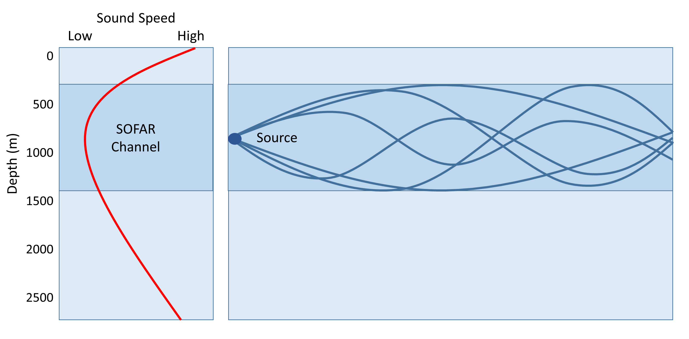

Sound Propagation in the Ocean
- move wave equation section somewhere else
- wave characteristics are there twice
In the ocean, light attenuates rapidly, whereas sound can travel thousands of kilometers, making sound is the primary sense for communication and navigation for marine mammals and human underwater telecommunications.

What is sound?
Sound is created by a vibrating object which compressesion and expansion produces a pressure difference which generates a sound wave that propagates. The resulting sound wave is a longitudinal oscillatory wave, which travels through a medium (e.g., water, air) as alternating high and low pressures. As sound propagates under water, it induces lateral movement of water molecules which creates pressure change. The closer the molecules, the tighter their bonds, the less time it takes to pass the sound to each other.

Note that a sound wave is omnidirectional, meaning that it propagates in all directions.
Sound characterization
Sound is described by characteristics that can be measured:
Loudness is measured by intensity: how much particles move. The amplitude of a wave is related to the amount of energy it carries. The intensity of a sound wave is defined as the energy transmitted through a unit area, per unit time, in the direction in which the sound wave is traveling; it is a vector quantity having both a magnitude and direction. Relative intensity is given in dB.
Pitch is measured by frequency: how often particles move
Phase cannot be heard. It specifies the location
high frequency vs low frequency image
{kind=link}
In general, larger objects produce low-frequency sounds.
Wave equation
Sound can be expressed as a solution of the wave equation as the following:
\[ \nabla^2 p - \frac{1}{c^2} \frac{\partial^2 p}{\partial t^2} = 0 \]
where \(p\) is the acoustic sound pressure (deviation from the ambiant pressure), \(c\) is the speed of sound in the medium (about 1500 m/s in seawater), and \(t\) is time.
\[
v(t) = A(2\pi \cdot \omega t)
\]
This equation is essential as it is the fundamental physics that allows us to convert the changes in voltage recorded by the hydrophones into the physical pressure waves.
Key wave characteristics:
- Amplitude: measured in decibels (dB), it represents the energy/intensity of the wave.
- Frequency (\(f\)): measured in Hertz (Hz), it defines the pitch.
- Wavelength (\(\lambda\)): related to speec (\(c\)) and frequency by \(c=f\lambda\).
Why does sound travel faster in water than air?
Sound travels roughly 4.3 times faster in water than in air (\(\approx 1500\) m/s in water vs 340 m/s in air). he speed of sound (\(v\)) is governed by the relationship between a material’s bulk modulus (B), its resistance to compression) and its density (\(\rho\)):
Bulk Modulus: The stiffness, or resistance to compression of a medium, which depends on the medium’s density: \(B=\rho \partial P / \partial \rho\).
\[ v = \sqrt{\left(B/\rho\right)} \]
While water is 800 times denser than air (1000 kg/m vs 1.2 kg m/3), it is also 20,000 times less compressible than air. The extreme stiffness of seawater allows for kinetic energy to transfer more efficienttly between molecules and as a result, sound to travel much fast underwater.
Sound speed profile
The speed of sound in the ocean is not constant. It depends on the environmental conditions, and fluctuates with temperature, salinity, and pressure (depth). An approximate change of sound speed per change in property:
- Temperature: \(\Delta T\) 1°C = 4 m/s
- Salinity: \(\Delta S\) 1 psu = 1 m/s
- Depth (pressure): \(\Delta z\) 1 km = 17 m/s
The change of sound speed with depth is called a sound speed profile:

In general,
- sound speed decreases with temperature, which we can see near the surface where temperatures change by a lot within a few meters
- sound speed increases with pressure, which we can see at depth where temperature is nearly constant but pressure keeps increasing
- salinity has small impact on sound speed since it doesn’t vary much, except in estuaries where salinity varies greatly
Ocean acoustic wave guides
SOFAR channel (ocean acoustic waveguide)
At approximately 1000 m depth, there is a point where the decrease in temperature and the increase in pressure the sound speed reaches a miniumum sound speed layer, also called the SOFAR channel (Sound Fixing And Ranging). This channel exists because of refraction, where waves tend to bend towards regions of slower speed, and sound converges and is trapped.
SOFAR channel: Depth-range at which sound speed reaches a minimum, usually around 1000 m.
Refraction: Change in direction as a wave crosses a boundary (such as temperature, pressure, salinity). Sound will bend from high sound speed to low sound speed (Snell’s law).

This channel is also called an ocean waveguide, because sound travels way farther at that depth. It is often used by marine mammals or humans for communications reachings thousands of kilometers.
Surface Duct
Similar to the SOFAR Channel, the Duct surface channel is a channel where sound gets trapped, within *** of the surface. This is due to …
Surface sound channel where all sound waves bend upwards.
Arctic Propagation
Empirical equations for sound speed
Several empirical equations have been developed to accurately capture the speed of sound from these variables as a function of depth.
Mackenzie: \[ c(T,S,z) = a_1 + a_2 T + a_3 T^2 + a_4 T^3 + a_5(S-35) + a_6 z + a_7 z^2 + a_8 T (S-35) + a_9 T z^3 \]
Del Grosso 1974:
\[ c(T,S,p) = c_{000} + \Delta c_T + \Delta c_S + \Delta c_P + \Delta c_{STp} \]
Chen-Millero-Li:
Wave behaviours
Absorption
As sound travels through water, it gets absorbed, caught by the molecules which vibrate and transform the wave energy into heat. As a result, the sound wave amplitude decreases as it propagates. High frequency sound gets absorbed faster, so high frequency sounds do not travel as far as low frequency sounds.
Attenuation
A sound wave is spherical, with propagation in all directions. As it propagates, the aplitude (or intensity) is reduces (~ \(1/r^2\)) due to absorption or scattering within the surrounding medium (sea water). Attenuation is very small for low frequnecy, so sounds like whale calls can propagate across entire ocean basins.
Reflection
Sound waves reflect and bounce off a surface (e.g., air, sea floor), creating echoes. Elements like sea floor sediment types can impact reflection efficiency.
A seafloor of hard bedrock and is a better reflector than watery sand.

Interference
Multiple paths can create constructive and destructive interference. Multi-path interference is very tricking to predict.
Refraction
Sound refracts when it encounters a change in the sound speed (sound speed changes with temperature, salinity, and pressure).
Transmission Loss
When a wave passes through a medium, a portion of the energy is lost due to multiple factors. A wave loses energy as it travels, and we quantify this as the transmission loss. Examples of mechanisms that can result in transmission lost are wave attenuation, geometrical spreading, bottom reflection loss, boundary scattering.
Marine Soundscape
move here soundscape characterization from “how do hydrophones work” section.
Ambient Noise
- ocean turbulence
- seismic noise
- wave noise
- thermal noise
- rain noise
- shipping noise
Relevant Units
The 1/Hz comes from the normalization of the Fourier transform, so that integrating over frequency gives back total variance. By definition:
\(<p2>=\int_0^\infty Spp(f) df\)
Parseval theorem: Energy in time = Energy in frequency
Intensity and Decibels (dB)
The decibel (dB) is the dominant unit in underwater acoustics. It is the ratio of the sound level intensity with a reference intensity, expresseed in a base 10 logarithmic scale. The accepted reference intensity is the intensity of a plane wave having a root-mean-squared (rms) pressure equal to 1 micro Pascal (\(\mu\)Pa).
A sound wave with an intensity of one million times that of the reference intensity has a level of \(10 \log{10^6}\equiv 60~\text{dB}~\text{re}~1~\mu Pa\).
Spectrum Level
The intensity refers to the levels at a single frequency. Often, we are interested in the level of a broadband signal or noise. In this case, the acoustic intensity must be referenced to a bandwidth (often 1 Hz). It also must have a reference distance. For a 1 m distance reference, the spectrum level is expressed in units of decibels referenced to a micropascal (\(\mu Pa\)) in a 1.0 Hz band @ 1 m.
Acoustic Masking
(check out the dredging report)
Challenges
- increases in ship strikes and noise
- disorientation
References
- Principles of Undewater Acoustics, Urick
- Underwater Acoustics, Hodges
- Medwin and Clay
- NOAA: Ocean Noise
- Discovery of Sound in the Sea (dosits): Science of Sound